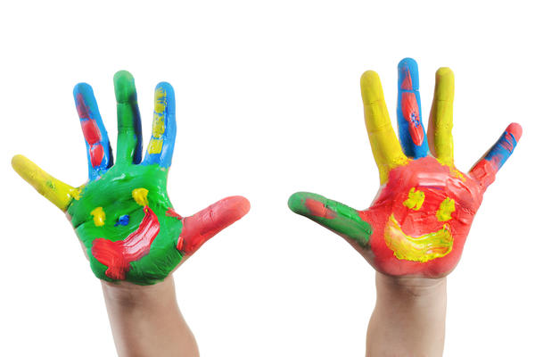
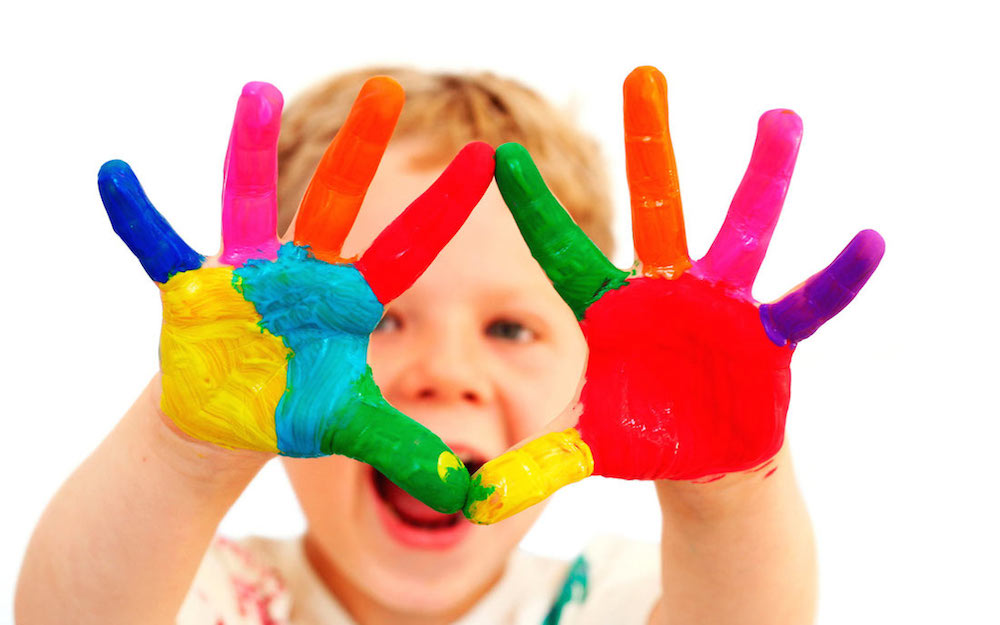

JAVASCRIPT HAND GESTURE PLUGIN DEMO
April - 2014
April - 2014

How can we do that?
Download and unzip the latest version of JSHG and just follow three main steps
GET THE ZIP FILE DOWNLOAD FROM GITHUB
/* Look inside the jshg folder to find jquery-1.11.0.min.js, compatibility.js, jshg.js and load all of them in the following order */ <script src="jshg/jquery-1.11.0.min.js"></script> <script src="jshg/compatibility.js"></script> <script src="jshg/jshg.js"></script>
Note: It requires jQuery v1.6 or later. You can load your own Jquery file.
<script type='text/javascript'>
// Define a function to map the gesture
// returning from JSHG with your actions
var actionMapper = function(gesture) {
if (gesture.isLeft)
console.log("Hey, your hand is on the left side");
...
}
// Init JSHG
JSHG.init({
"actionCallback": actionMapper
});
</script>
At this time, JSHG is ready to use
<script type='text/javascript'> JSHG.run(); // JSHG.stop(); -- for stopping </script>
You may want to let it learn the skin color before staring. To do that, use the following function instead of run()
<script type='text/javascript'> JSHG.learnSkinColor(); </script>

How can we do that?
The best way to predict the future is to invent it.
Hope you enjoy it and predict your own future.